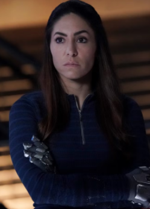

Marvel's Agents of Shield

Marvel's Agents of S.H.I.E.L.D. (ou simplesmente Agents of S.H.I.E.L.D.) é uma série de televisão estadunidense criada por Joss Whedon em colaboração com Jed Whedon e Maurissa Tancharoen, ela é baseada na S.H.I.E.L.D. (Superintendência Humana de Intervenção, Espionagem, Logística e Dissuasão, sigla em português), uma organização fictícia que atua pela manutenção da paz e espionagem em um mundo de super-heróis criada pela Marvel Comics. Ela está situada no Universo Cinematográfico Marvel (MCU), compartilhando a continuidade com os filmes e as demais séries de televisão da franquia. A série foi produzida pela ABC Studios, Marvel Television e a Mutant Enemy Production, com Jed Whedon, Tancharoen e Jeffrey Bell servindo como showrunners. A série foi transmitida originalmente pela rede ABC. Atualmente está disponível no Disney+.
Sinopse [voltar]
A série gira em torno do personagem Phil Coulson, com Clark Gregg reprisando seu papel da série de filmes, e sua equipe de agentes da S.H.I.E.L.D., que precisam lidar com vários casos e inimigos incomuns, incluindo outras organizações como a Hidra e os Inumanos.
Produção [voltar]
Após a compra da Marvel pela Disney em 2009, foi anunciada a formação da Divisão de TV da Marvel.Nos meses seguintes, vários pilotos baseados em quadrinhos do catálogo da Marvel começaram a ser desenvolvidos.
Em agosto de 2012, foi anunciado que o diretor de Os Vingadores, Joss Whedon, criador de séries de sucesso como Buffy, a Caça-Vampiros e Firefly, estaria envolvido no desenvolvimento da série. Algumas semanas depois a ABC encomendou um piloto para uma série, chamado S.H.I.E.L.D. a ser escrito e dirigido por Joss Whedon, Jed Whedon e Maurissa Tancharoen. Whedon, Tancharoen e Jeffrey Sino seriam os showrunners da série. O diretor executivo da Disney, Bob Iger, deu sinal verde para a série da S.H.I.E.L.D.
Em abril de 2013, a ABC anunciou que a série seria chamada de Marvel's Agents of S.H.I.E.L.D. e, finalmente, anunciou oficialmente a série para uma temporada completa. Em julho de 2013, Jed Whedon disse que a série irá trabalhar em conjunto com os filmes da Marvel, tanto do passado quanto do futuro, e disse: "Nós planejamos tentar criar juntamente com os filmes e torná-los mais gratificante em ambas as partes."
Em outubro de 2012, Clark Gregg foi o primeiro ator do elenco principal a ser anunciado para a série, reprisando seu papel como Phil Coulson. Após dois meses, Ming-Na Wen foi anunciada como Melinda May, Elizabeth Henstridge e Iain De Caestecker foram anunciados como Jemma Simmons e Leo Fitz, respectivamente, Brett Dalton foi contratado como Grant Ward e Chloe Bennet como Skye, completando o elenco principal para a primeira temporada.
Todos os membros principais do elenco da segunda temporada retornaram para a terceira temporada, com Simmons e Mitchell se juntando a eles, promovidos a partir de seus papéis recorrentes. Em outubro de 2015, a Colmeia Inumana foi introduzida; para a segunda parte da terceira temporada, ele possui o cadáver de Grant Ward, novamente interpretado por Brett Dalton. Também foram apresentadas Natalia Cordova-Buckley e John Hannah, recorrendo como Elena "Yo-Yo" Rodriguez e Holden Radcliffe, respectivamente. Jeff Ward foi introduzido na quinta temporada, como Deke Shaw.
Principais Personagens [voltar]

Phil Coulson (Clark Gregg)
Coulson é um agente da S.H.I.E.L.D. e depois se torna o diretor da organização. Em abril de 2013, Gregg concordou em se juntar à série depois de ouvir a explicação do criador Joss Whedon sobre a ressurreição de Coulson, após a morte do personagem em Os Vingadores, que ele chamou de "fascinante" e "fiel ao mundo dos quadrinhos". Gregg abordou a promoção de Coulson ao diretor para conseguir seu emprego dos sonhos, o que ao mesmo tempo obrigou o personagem a adotar uma atitude mais equilibrada, como a de Nick Fury. Depois de ser possuído pelo Spirit of Vengeance no final da quarta temporada, o sangue de Kree que ressuscitou Coulson é queimado e ele finalmente morre após o final da quinta temporada. Gregg interpreta um novo personagem, Sarge, na sexta temporada.

Melinda May (Ming-Na Wen)
Joss Whedon tinha o personagem, uma piloto da S.H.I.E.L.D. especialista em armas, apelidada de "a cavalaria". Wen recebeu uma história de fundo para a personagem se preparar, mas não foi informado como ela ganhou sua reputação; com o passado de May revelado em "Melinda", Wen a chamou de "devastadora ... Para saber o que ela tinha que fazer, para o bem de muitos ... Eu posso entender por que isso a traumatizaria tanto e faria com que ela recuasse." Wen chamou May de" mãe não convencional ", e disse que é seu relacionamento com Coulson que a faz ficar no S.H.I.E.L.D., apesar de seu passado.
Skye (Chloe Bennet)

Uma inumana e agente S.H.I.E.L.D. com a capacidade de criar terremotos. O personagem de Skye sempre teve a intenção de se tornar a versão MCU de Johnson, tendo consequências para os relacionamentos do personagem com os outros S.H.I.E.L.D. agentes, especialmente Coulson. Bennet sentiu que o personagem era alguém que usaria seu coração na manga, enquanto tinha algum controle sobre suas emoções. Wen observou que o personagem evolui de "anti-estabelecimento para de repente alguém que quer criar um estabelecimento que ajude" os Inumanos. Na terceira temporada, ela não passa mais por "Skye" e ganha o nome público "Tremor".

Jemma Simmons (Elizabeth Henstridge)
Uma agente da S.H.I.E.L.D. bioquímica especializada em ciências da vida (humana e alienígena). Henstridge descreveu sua personagem como "inteligente, concentrada e curiosa ... ela tem um relacionamento maravilhoso com Fitz. Eles meio que se reúnem." Quando Fitz e Simmons começam a passar um tempo separados durante a série, Henstridge observou que "traz uma dinâmica totalmente nova apenas para eles como personagens", uma vez que são quase inseparáveis desde o primeiro encontro. No lado mais severo de Simmons visto em temporadas posteriores, Henstridge observou que o personagem "sempre foi muito matemático de uma maneira". Simmons é "profundamente" alterado depois de ficar preso no planeta Maveth por seis meses.

Leo Fitz (Iain De Caestecker)
Um agente da S.H.I.E.L.D. especializado em engenharia, especialmente em tecnologia de armas. De Caestecker descreveu o personagem como "bastante apaixonado pelo que faz", mas não emocionalmente inteligente. Fitz tem um relacionamento próximo com Simmons; De Caestecker diz que "apenas se encaixam de uma maneira muito estranha". O personagem sofre lesões cerebrais no final da primeira temporada. Os escritores pesquisaram traumas cerebrais com médicos e especialistas antes de abordá-los na série. De Caestecker também fez sua própria pesquisa, sentindo que é "algo que nunca deve ser banalizado. É uma coisa real e séria ... só precisamos ser constantemente respeitosos com ela".

Mack (Henry Simmons)
Um agente da S.H.I.E.L.D. mecânico com uma desconfiança do estrangeiro e do sobre-humano. Simmons disse que o personagem está mais preocupado em contribuir à sua maneira e em fazer seu trabalho fora do campo. Mack não gosta de violência, mas faz "o que ele precisa fazer". Mack revela na terceira temporada que ele confia em sua "fé", o que implica que ele é um cristão. Dee Hogan, da Mary Sue, descreveu isso como "um retrato positivo e positivo de pessoas de fé, pois Mack demonstra a confiança e o amor silenciosos, em vez da agressão e fanatismo que tantas vezes estão associados a ela". Mack se torna o novo diretor da Shield na sexta temporada.

Elena "Yo-Yo" Rodriguez (Natalia Cordova-Buckley)
Uma inumuna colombiana que pode se mover em super velocidade por uma batida do coração, antes de retornar ao ponto em que começou. Ela relutantemente se junta à S.H.I.E.L.D. e se torna parte dos Guerreiros Secretos, eventualmente crescendo perto de Mack, que lhe dá o apelido de "Yo-Yo". Ao retratar o personagem pela primeira vez, Cordova-Buckley sorria sempre que Rodriguez estava prestes a usar suas habilidades, para mostrar uma adrenalina e a sensação de ter esse poder. Após respostas positivas dos fãs, a atriz transformou esse traço em uma personalidade mais travessa para o personagem.
Temporadas [voltar]
Temporada 1
Na primeira temporada o agente da S.H.I.E.L.D. Phil Coulson monta uma pequena equipe de agentes da S.H.I.E.L.D. para lidar com novos casos estranhos. Eles investigam o Projeto Centopeia e seu líder, "O Clarividente", e acabam descobrindo que a organização é, na verdade, apoiada pela Hidra, que se infiltrou na S.H.I.E.L.D.
Temporada 2
Na segunda temporada, após a destruição da S.H.I.E.L.D., o agora diretor Coulson e sua equipe buscam restaurar a confiança do governo e do público ao lidar com a Hidra, uma facção anti super-humanos de agentes da S.H.I.E.L.D. e os recém-revelados Inumanos (que possuem habilidades especiais).
Temporada 3
Durante a terceira temporada, Coulson começa uma missão secreta para reunir os Guerreiros Secretos, uma equipe de Inumanos,[11][12] enquanto a Hydra restaura seu antigo líder Inumano Hive ao poder.
Temporada 4
Após a derrota do Hive e com a Hidra destruída, a S.H.I.E.L.D. torna-se uma organização legítima mais uma vez para a quarta temporada, com a assinatura dos Acordos de Sokovia. Coulson volta a ser um agente de campo, com o mundo ainda acreditando que ele está morto, e fica encarregado de rastrear pessoas mais aprimoradas - incluindo Robbie Reyes / Motoqueiro Fantasma - enquanto o agente Leo Fitz e o Dr. Holden Radcliffe completam seu trabalho sobre Life Model Decoys.
Temporada 5
Na quinta temporada, Coulson e os membros de sua equipe são misteriosamente sequestrados e levados para uma estação espacial administrada pelos Kree no ano de 2091, onde eles devem tentar salvar o resto da humanidade e descobrir como chegar em casa.
Temporada 6
Na sexta temporada parte da equipe está espalhada pela galáxia a procura de Fitz, enquanto o resto fica na terra reconstruindo a S.H.I.E.L.D. Enquanto o grupo trabalha para encontrar equilíbrio depois de perder Coulson, uma nova ameaça surge com indivíduos de outro planeta invadindo a terra liderados por um homem chamado Sarge.
Temporada 7
A sétima e última temporada levará os agentes em uma viagem no tempo, chegando em 1931. A equipe terá que descobrir uma maneira de voltar à sua era sem interromper o fluxo temporal no processo.